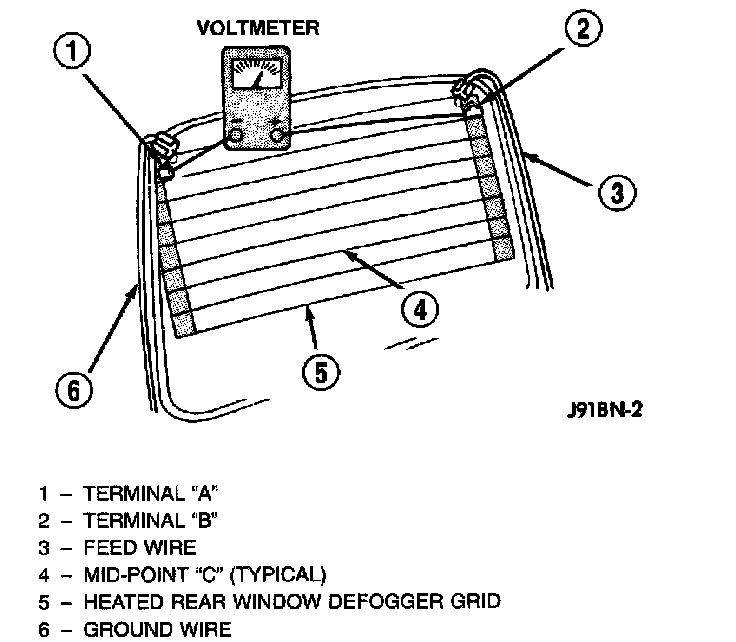

Detecting Breaks in Rear Window Defogger Grid
Rear Window Glass Grid Test:

To detect breaks in the grid lines, the following procedure is required:
1. Turn the ignition switch to the On position. Set the rear window defogger switch in the On position. The indicator lamp should light. If OK, go to Step 2. If not OK, see the Defogger Relay diagnosis.
2. Using a 12-Volt DC voltmeter, contact the vertical bus bar on the right side of the vehicle with the negative lead. With the positive lead, contact the vertical bus bar on the left side of the vehicle. The voltmeter should read battery voltage. If OK, go to Step 3. If not OK, repair the open circuit to the defogger relay as required.
3. With the negative lead of the voltmeter, contact a good body ground point. The voltage reading should not change. If OK, go to Step 4. If not OK, repair the circuit to ground as required.
4. Connect the negative lead of the voltmeter to the right side bus bar and touch each grid line at midpoint C with the positive lead. A reading of approximately six volts indicates a line is good. A reading of zero Volts indicates a break in the grid line between midpoint C and the left side bus bar. A reading of 10 to 14 Volts indicates a break between midpoint C and the right side bus bar. Move the positive lead on the grid line towards the break and the voltage reading will change as soon as the break is crossed.